第 0 章はじめに
本書の読み方
本書は 2 部構成です。第 1 部「入門」は一つの例題に沿って、地形の入力から照査報告書の作成までを進めます。第 1〜8 章を順に操作すれば、基本的な斜面安定解析をひととおり終えられます。第 2 部「応用」は 1 章に 1 つの機能を扱います。各章の冒頭で使う場面を説明してから操作方法を示すので、必要な章だけ読めば十分です。
各章のモデルファイルはダウンロードしてそのまま読み込めるので、前の手順を省略できます。ファイル一覧は付録 C にあります。
| 部 | 章 | 内容 | 例題ファイル |
|---|---|---|---|
| 入門 | 1 | 地表面、地層境界、地下水位 | tutorial-profile.csv |
| 2 | 土質定数 | ||
| 3 | のり肩とのり尻の荷重 | ||
| 4 | 最初の計算と結果の見方 | tutorial-1-slope.json | |
| 5 | 補強の追加（鉄筋挿入工） | ||
| 6 | 常時・豪雨時・地震時のケース | tutorial-2-nails.json | |
| 7 | 擁壁の外的安定 | tutorial-3-wall.json | |
| 8 | 報告書の作成と保存 | tutorial-report.docx | |
| 応用 | 9 | すべり面の位置が分かっているとき：制御点 | 各章とも tutorial-1-slope.json から開始 |
| 10 | 指定すべり面と円弧（旧報告書の照合） | ||
| 11 | 土質定数の逆算 | ||
| 12 | 地層別の水頭線と間隙水圧比 ru | ||
| 13 | 斜面外の湛水と引張亀裂 | ||
| 14 | 抑止杭、マイクロパイル、ジオシンセティックス | ||
| 15 | 計算方法と探索の設定 | ||
| 16 | 単位、保存、検証レポート、版 | ||
| 17 | 観測井の水位と Fs 時系列 | tutorial-4-wells.json |
SSA でできること
SSA はブラウザで動く二次元の斜面安定解析ツールです。インストールは不要で、データがサーバーに送られることもありません。動的計画法（DP）で任意形状の非円弧臨界すべり面を探索し、簡易 Janbu 法、Spencer 法、Morgenstern–Price 法で安全率を計算します。さらに次の条件を加えられます。
- 地表の荷重（等分布、台形、線荷重）。
- 補強材：鉄筋挿入工、グラウンドアンカー、抑止杭、マイクロパイル、ジオシンセティックス。
- 重力式、片持ばり式、控え壁式の擁壁と、その外的安定の照査。
- 常時、豪雨時、地震時などの複数ケースを一度に計算し、基準値で判定。
- 観測井の水位記録から各時刻の安全率を計算（Fs 時系列）。
- Word または PDF の計算書。
解説動画
本書と同じ例題を使った解説動画が 3 本と、SSA を紹介する導入動画があります。ナレーションは中国語で、英語と日本語の字幕を選べます。
- 導入SSA の紹介
- 第 1 回：入門断面、補強、擁壁、報告書（第 1〜8 章）
- 第 2 回：現地データ地表の兆候、孔内傾斜計、逆算、水頭線（第 9〜12 章）
- 第 3 回：特殊条件と検証湛水、引張亀裂、抑止杭、計算方法、検証（第 13〜16 章）
画面構成
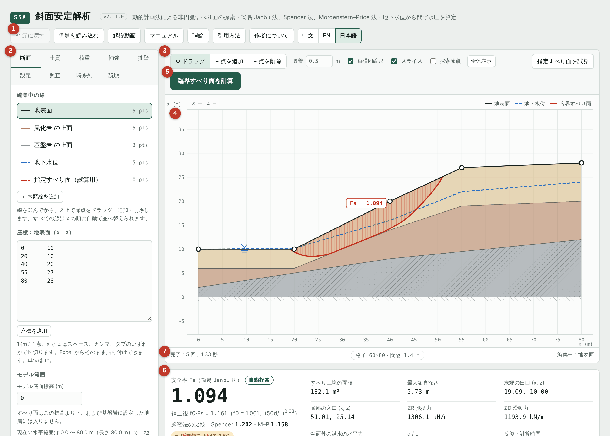
| 番号 | 領域 | 用途 |
|---|---|---|
| 1 | 上部のボタン | 元に戻す（Ctrl+Z）、例題を読み込む、本マニュアル、理論、言語の切替え。 |
| 2 | タブ | 断面、土質、荷重、補強、擁壁、設定、照査、時系列、説明。おおむねこの順に入力します。 |
| 3 | ツールバー | 図上での点のドラッグ・追加・削除、吸着間隔、スライスや探索節点の表示、全体表示。 |
| 4 | 断面図 | 地形、地層、水位、荷重、補強材、すべり面をリアルタイムに表示し、マウスで編集できます。 |
| 5 | 計算ボタン | 「臨界すべり面を計算」は自動探索、「指定すべり面を試算」は指定したすべり面だけを計算します。 |
| 6 | 結果 | 安全率、すべり土塊の諸量、補強材の力、スライスの明細。 |
| 7 | ステータスバー | 計算の進行状況、メッセージ、探索格子の設定。 |
座標と単位
- 断面は x（水平、m）と z（標高、m）で表し、x は右向きに増えます。斜面は左向きでも右向きでもよく、プログラムが自動で判断します。
- 各線（地表面、地層境界、地下水位）は x の順に並んだ点列で、点と点を直線で結びます。
- 既定の単位は kN、kPa、kN/m³ です。「土質」タブで tf 系の単位に切り替えられます（第 16 章）。
- 力と荷重はすべて奥行き 1 m 当たりの値です。
第 1 部
入門：最初の照査報告書
例題は道路上部の斜面です。高さ約 12.5 m、表層に厚さ 4〜6 m の崩積土があり、その下は風化岩と基盤岩、のり肩には道路があります。台湾の水土保持技術規範に従って常時、豪雨時、地震時を照査し、必要に応じて鉄筋挿入工で補強し、のり尻に擁壁を設けて計算書を作成します。
第 1 章地表面、地層境界、地下水位
断面はいくつかの線で構成されます。地表面、各地層の上面（境界線）、地下水位です。例題のデータは次のとおりで、単位は m です。
| 線 | 点 (x, z) |
|---|---|
| 地表面 | (0, 10) (10, 10) (35, 22.5) (50, 24) (70, 25) |
| 風化岩の上面 | (0, 6) (15, 7.5) (35, 16) (70, 19) |
| 基盤岩の上面 | (0, 2) (35, 9) (70, 12) |
| 地下水位 | (0, 7) (15, 8.5) (35, 17) (70, 21) |
1.1 方法 1：線ごとに座標を貼り付ける
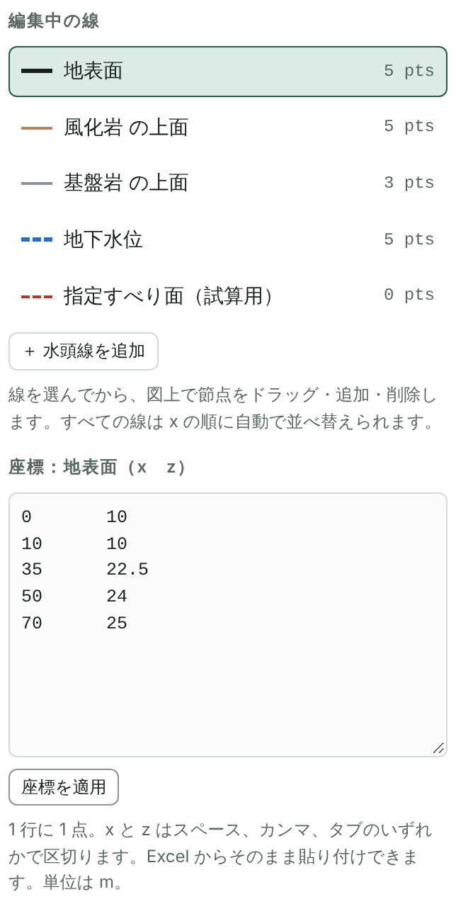
- 「断面」タブを開き、「編集中の線」で地表面をクリックします。
- 下の座標欄に地表面の点を貼り付けます。1 行に 1 点で、x と z はスペース、カンマ、タブのいずれかで区切ります。Excel の 2 列をコピーしてそのまま貼り付けられます。
- 座標を適用を押すと、図がすぐに更新されます。
- 風化岩 の上面、基盤岩 の上面、地下水位を順にクリックし、手順 2 と 3 を繰り返します。
- 「モデル範囲」のモデル底面標高が 0 m であることを確認します。すべり面はこの標高より下には入りません。
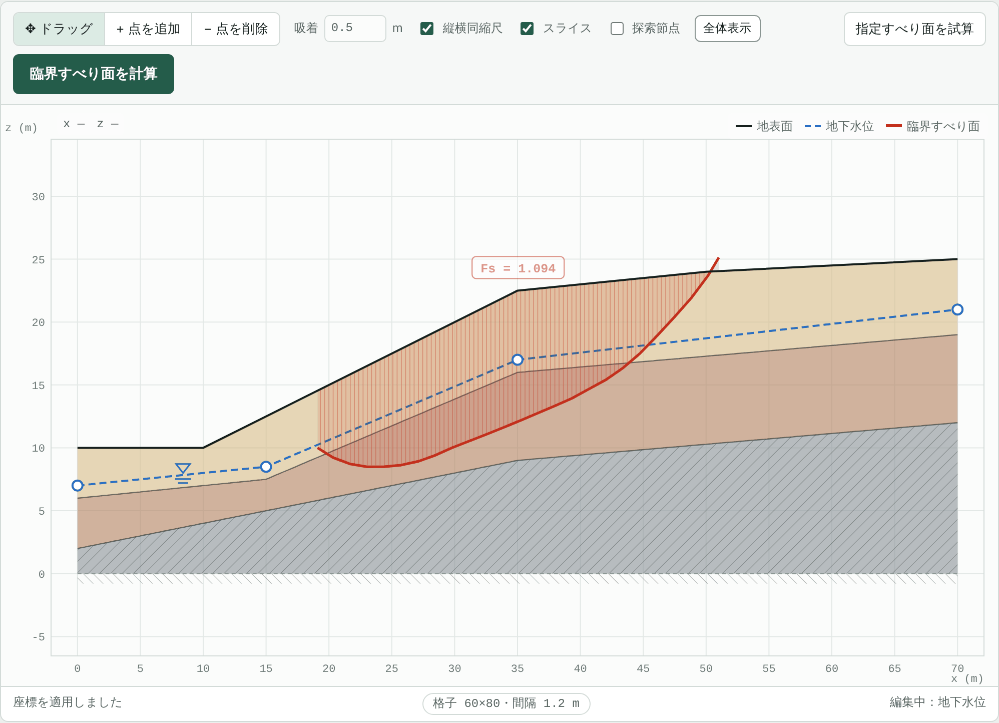
1.2 方法 2：CSV ファイルで一度に取り込む
測量やボーリングのデータは Excel にあることが多く、CSV で取り込むのが最も手早い方法です。次の 2 つの形式に対応しています。
- 2 列（x, z）：現在選択している線に取り込みます。
- 3 列以上：1 列目が x、2 列目が地表の標高、3 列目以降が第 2 層、第 3 層…の上面です。列名に「水」または「water」を含む列は地下水位として読み込みます。その x に値のない線は空欄にします。
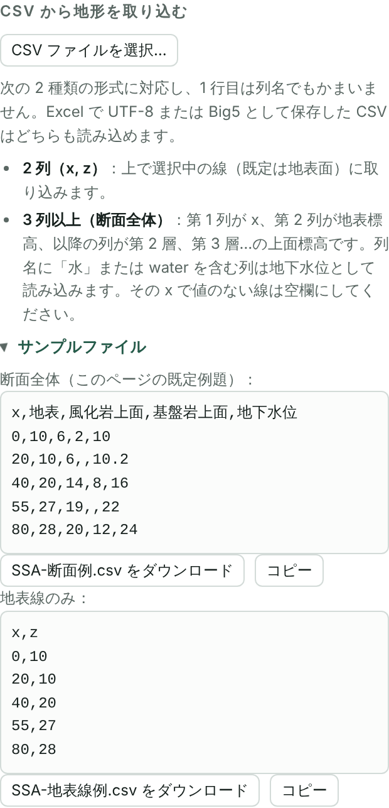
例題の CSV（tutorial-profile.csv）の内容は次のとおりです。
x,地表,風化岩上面,基盤岩上面,地下水位 0,10,6,2,7 10,10,,, 15,,7.5,,8.5 35,22.5,16,9,17 50,24,,, 70,25,19,12,21
- Excel で上のようにデータを並べ、CSV（UTF-8）で保存します。
- 「断面」タブでCSV ファイルを選択…を押し、ファイルを選びます。
- ステータスバーに取り込んだ点数が表示されます。例えば地表面 5 点、地層境界 2 本、地下水位 4 点です。
1.3 図上での微調整
線を選んだ状態で、図上で編集できます。
- ドラッグモードでは頂点をドラッグして移動します。位置は「吸着」で設定した間隔に合わせられます（既定 0.5 m、0 で吸着なし）。
- 点を追加モードでは図をクリックして頂点を追加し、点を削除モードでは頂点をクリックして削除します。
- 操作を誤ったときは左上の元に戻すか Ctrl+Z を押します。
第 2 章土質定数
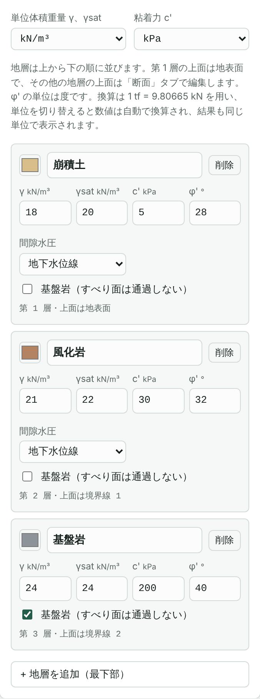
「土質」タブで各地層の定数を次のように入力します。地層は上から下の順に並び、第 1 層の上面が地表面です。
| 地層 | γ kN/m³ | γsat kN/m³ | c′ kPa | φ′ ° | 基盤岩 |
|---|---|---|---|---|---|
| 崩積土 | 18 | 20 | 5 | 28 | |
| 風化岩 | 21 | 22 | 30 | 32 | |
| 基盤岩 | 24 | 24 | 200 | 40 | ✓ |
- γ と γsat：地下水位より上は γ、下は飽和単位体積重量 γsat を使います。
- c′ と φ′：有効応力の強度定数です。
- 間隙水圧：既定は「地下水位線」で、地下水位からの静水圧です。ほかの選択肢は第 12 章で説明します。
- 基盤岩：チェックするとすべり面はその地層に入りません。通常は最下部の硬い岩盤に使います。
- 地層名と色は変更できます。名前は「断面」タブの線の一覧と報告書に表示されます。
第 3 章のり肩とのり尻の荷重
例題の斜面はのり肩に道路があります。交通荷重は一時的な荷重で、x = 36〜44 m の 10 kPa の等分布荷重とします。
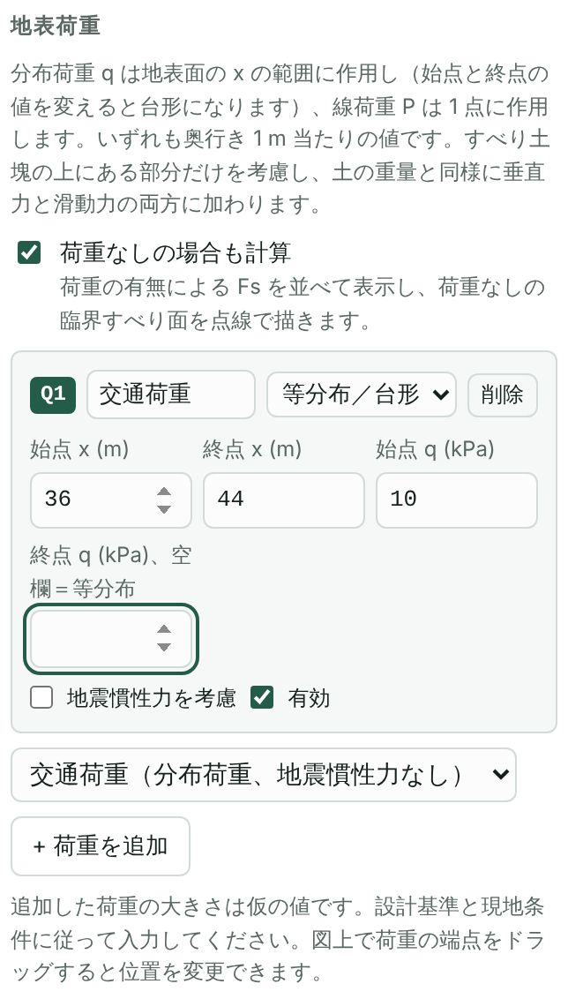
- 「荷重」タブで一覧から交通荷重（分布荷重、地震慣性力なし）を選び、+ 荷重を追加を押します。
- 始点 x を 36、終点 x を 44、始点 q を 10 にします。終点 q を空欄にすると等分布荷重、別の値を入れると台形荷重になります。
- 交通荷重は一時的なので「地震慣性力」はチェックしません。建物や擁壁などの永続荷重はチェックします。
荷重は図上で端点をドラッグして移動することもできます。新しい荷重の大きさは仮の値なので、設計基準と現場条件に合わせて変更してください。
のり肩とのり尻
- のり肩（斜面上方）の荷重は、通常、安全率を下げます。
- のり尻（斜面下方）の荷重は、通常、安全率を上げます（押え盛土の効果）。駐車車両や仮置き土など取り除かれる可能性のある荷重で安全率を上げてはいけません。
- タブ上部の荷重なしの場合も計算をチェックすると、荷重ありとなしの Fs が並べて表示されます。
- 盛土には強度があり、すべり面が通過することもあります。盛土は荷重ではなく、地表線の変更と盛土層の追加で表します。
第 4 章最初の計算と結果の見方
右上の臨界すべり面を計算を押します。プログラムは断面全体から安全率が最小となるすべり面を探索し、通常は数秒で終わります。
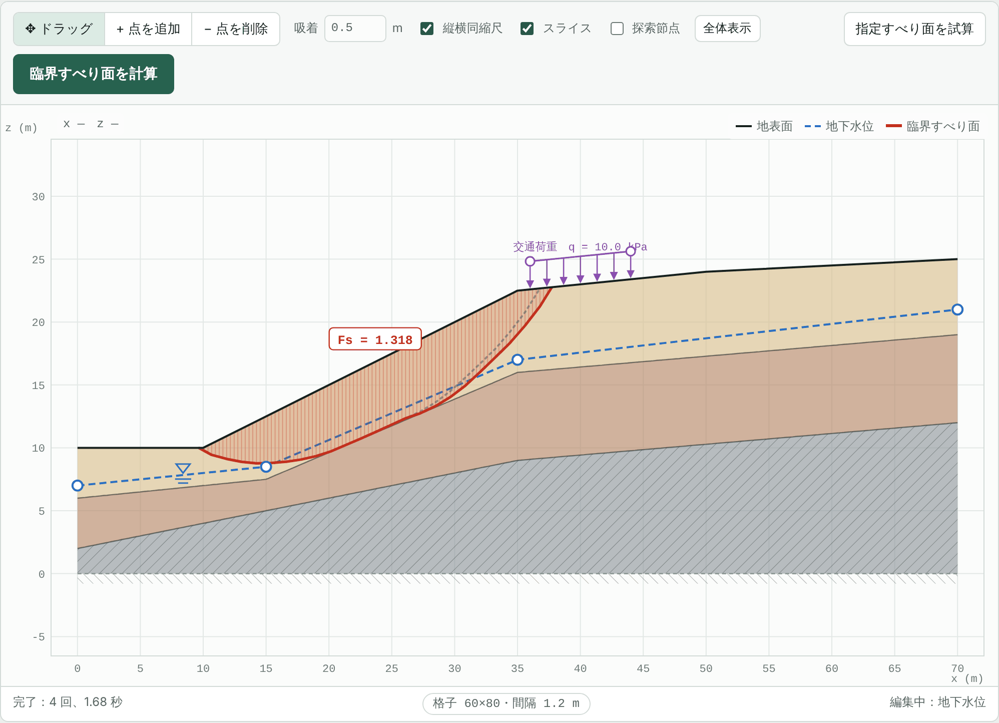
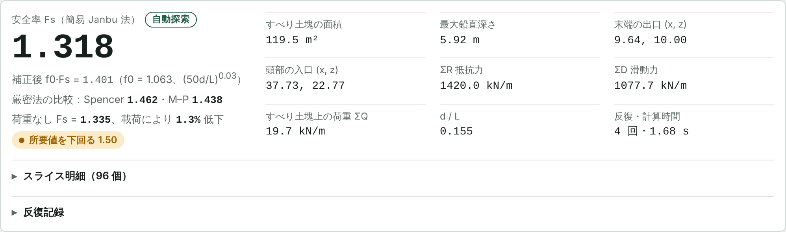
4.1 結果の見方
| 項目 | 意味 |
|---|---|
| 安全率 Fs | 大きく表示される数値で、ここでは 1.318。既定では原 SSA プログラムと同じく補正前の簡易 Janbu 法の値を使い、安全側になります。 |
| 補正後 f0·Fs | 簡易 Janbu 法の値に補正係数 f0 を掛けた参考値。これで判定するには「設定」タブで「補正後の f0·Fs で判定」をチェックします。 |
| 厳密法の比較 | 同じすべり面での Spencer 法と Morgenstern–Price 法の結果（第 15 章）。 |
| 荷重なしの Fs | すべての荷重を除いたときの Fs。ここでは 1.335 で、交通荷重により Fs は 1.3% 下がっています。 |
| 所要値 | 「設定」タブの所要安全率（既定 1.50）との比較。ここでは「所要値を下回る」。 |
| すべり土塊 | 面積、最大鉛直深さ、末端の出口と頭部の入口の座標、抵抗力と滑動力の合計。 |
| スライスの明細 | 展開すると各スライスの幅、重量、間隙水圧、強度定数、力を確認できます。CSV でコピーできます。 |
常時の Fs = 1.318 は水土保持技術規範が求める 1.5 を下回るため、補強が必要です。先に進む前にモデルを保存しておきましょう（8.3 節）。本章終了時のモデルは例題ファイル tutorial-1-slope.json です。
第 5 章補強の追加
ここではのり面に鉄筋挿入工を 1 列打設します。補強材はすべり面と交わる位置で引張力を発揮します。その大きさは引張耐力、引抜き抵抗、のり面工の耐力のうち最小の値で、水平間隔で割って奥行き 1 m 当たりの力にします。
5.1 計上方法と最初の鉄筋挿入工
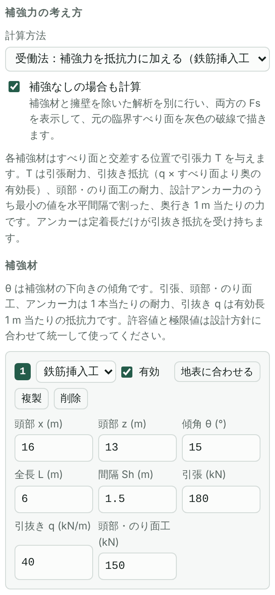
- 「補強」タブで計上方法を受働法：補強力を抵抗力に加えるにします。鉄筋挿入工では安全側となる受働法が一般的で、プレストレスを与えるアンカーでは主働法が一般的です。
- 補強なしの場合も計算がチェックされていることを確認します。補強前後の Fs が並べて表示されます。
- + 鉄筋挿入工を押して 1 本追加し、長さ L を 6 m に変えます。ほかの項目は下表のとおりです。
| 項目 | 意味 | この例 |
|---|---|---|
| 頭部 x, z | 補強材頭部の位置。「地表に合わせる」で地表面に移動 | 列で配置で設定 |
| 傾角 θ | 下向きの傾角（°） | 15 |
| 長さ L | 補強材の長さ（m） | 6、のちに 9 |
| 間隔 Sh | 断面に直交する方向の水平間隔（m） | 1.5 |
| 引張 | 1 本当たりの許容引張力（kN） | 180 |
| 引抜き q | 有効長 1 m 当たりの引抜き抵抗（kN/m） | 40 |
| のり面工 | のり面工または頭部の耐力（kN） | 150 |
5.2 列で配置
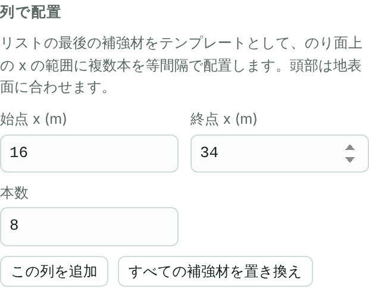
- 「列で配置」で始点 x = 16、終点 x = 34、本数 8 を入力します。
- すべての補強材を置き換えを押します。一覧の最後の補強材をテンプレートとして、この区間ののり面に 8 本を等間隔に並べ、頭部を地表面に合わせます。
- 臨界すべり面を計算を押します。
「この列を追加」は既存の補強材を残したまま 1 列追加します。長さの異なる複数列を配置するときに便利です。
5.3 試算と調整
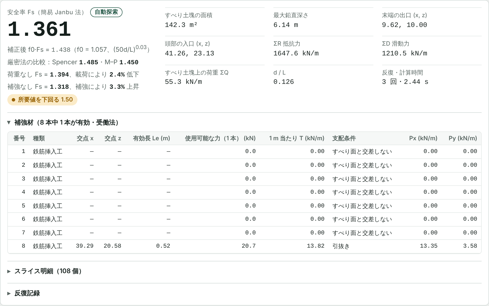
6 m の補強材の多くはすべり面を越える長さが短く、引抜き抵抗が限られるため、Fs は 1.318 から 1.361 にしか上がりません。表の有効長 Le はすべり面より先の長さで、「支配条件」の列は引張、引抜き、のり面工のどれで決まったかを示します。
一覧の最後の補強材の長さを 9 m に変え、もう一度すべての補強材を置き換えと臨界すべり面を計算を押します。
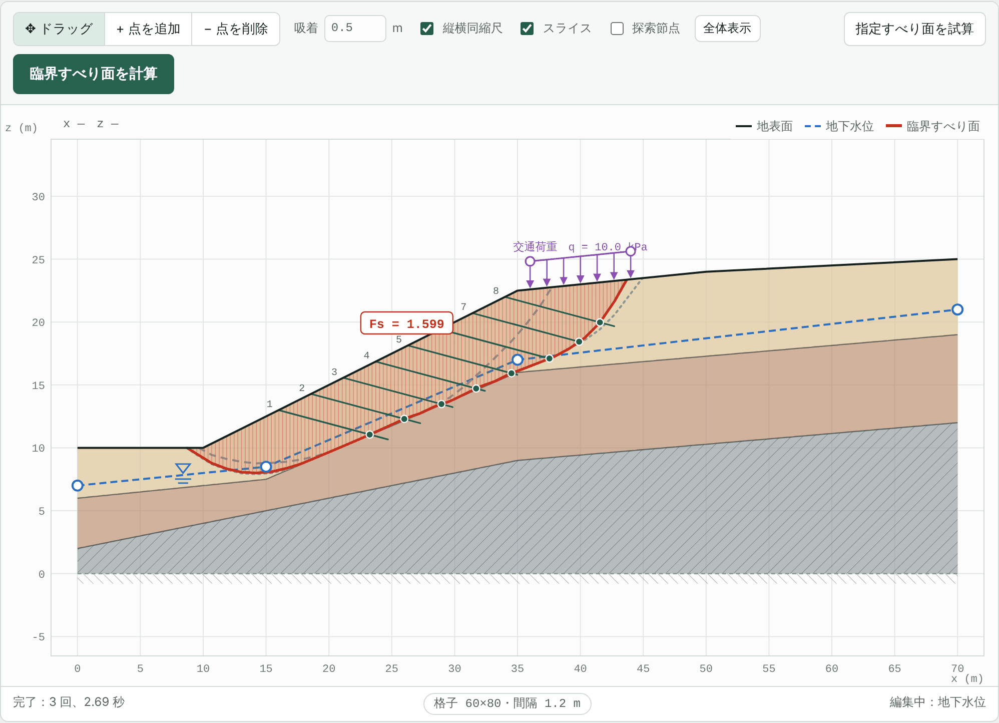
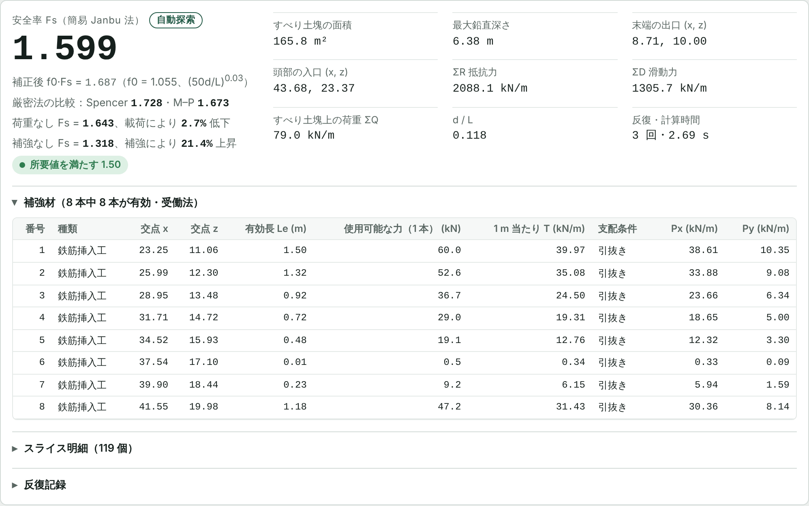
第 6 章常時・豪雨時・地震時のケース
第 5 章で照査したのは現況（常時）だけです。基準では豪雨時と地震時も照査し、それぞれ所要安全率が定められています。「照査」タブでは複数のケースを設定し、ワンクリックで計算できます。
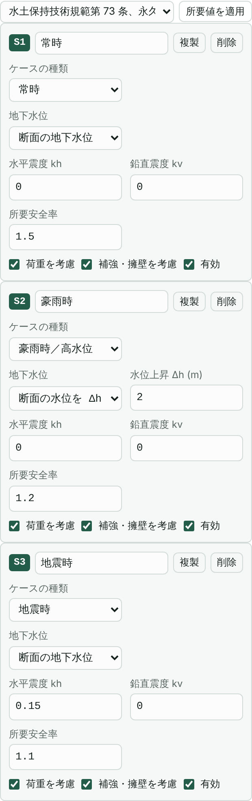
- 「照査」タブを開きます。上部の一覧の既定は水土保持技術規範第 73 条、永久で、3 ケースの所要安全率は 1.5、1.2、1.1 です。ほかの基準を使うときは選んでから「所要値を適用」を押します。
- S2 豪雨時：地下水位を「断面の水位を Δh 上昇」にし、Δh = 2 m を入力します。上昇後の水位は地表面より上にはなりません。
- S3 地震時：設計水平震度 kh = 0.15 を入力し、鉛直震度 kv は 0 のままにします。
- 全ケースを計算を押します。ケースごとに臨界すべり面を探索します。
各ケースのカードでは次の設定もできます。
- ケースの種類：常時、豪雨時／高水位、地震時。「所要値を適用」は種類に応じて所要安全率を入力し、擁壁の照査も種類に応じて常時または地震時の所要値を使います。
- 地下水位：断面の地下水位、Δh 上昇、水位が地表面、地下水なし。
- 荷重を考慮、補強・擁壁を考慮：個別にオフにでき、荷重の除去や補強材の機能喪失を検討できます。
- 「コピー」で似たケースをすばやく作れます。例えば Δh を変えた感度分析に使います。
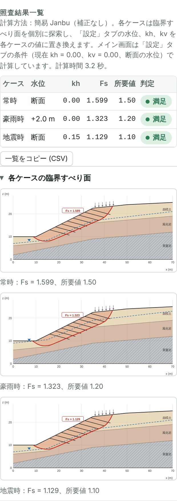
3 ケースとも満たしています。常時 1.599 ≥ 1.5、豪雨時 1.323 ≥ 1.2、地震時 1.129 ≥ 1.1。一覧表は「一覧をコピー (CSV)」で Excel に貼り付けられ、報告書にもこの表と各ケースのすべり面が載ります。この時点のモデルは tutorial-2-nails.json です。
第 7 章擁壁の外的安定
のり尻に重力式擁壁を設け、背面を埋め戻して排水や維持管理用の平場にするとします。SSA は擁壁を 2 つの方法で照査します。
- 外的安定：擁壁を剛体とみなし、滑動、転倒、偏心（合力の位置）、支持力を照査します。寸法を変えるとすぐに結果が更新されます。
- 全体安定：擁壁を重量をもつ貫通できない構造物とみなし、擁壁の下や背後を通るすべり面を探索します。
外的安定を満たすまで寸法を調整し、そのあと全体安定を確認します。竪壁や底版の配筋などの部材設計は本ツールの対象外です。
7.1 地表線の変更
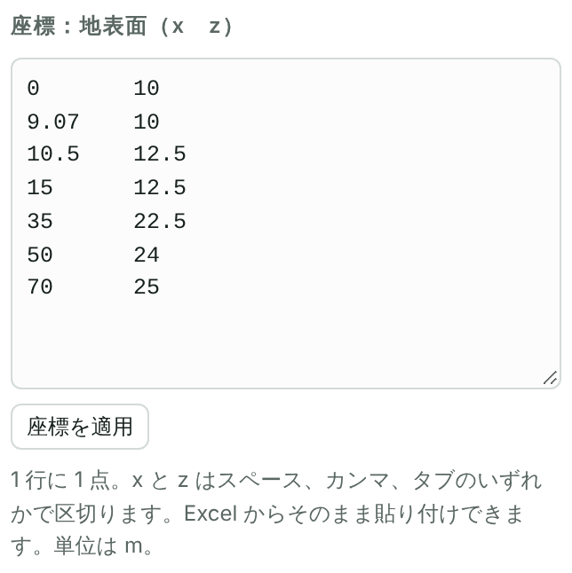
地表線は擁壁の天端まで達し、埋め戻した平場を含む必要があります。「断面」タブで地表面を選び、点を次のように変更します。
0 10 9.07 10 10.5 12.5 15 12.5 35 22.5 50 24 70 25
(9.07, 10)〜(10.5, 12.5) が擁壁の前面、(10.5, 12.5)〜(15, 12.5) が天端と背面の平場です。前面の道路は 10 m、擁壁の底面は 9 m で、根入れは 1 m です。
7.2 照査基準の選択と擁壁の追加
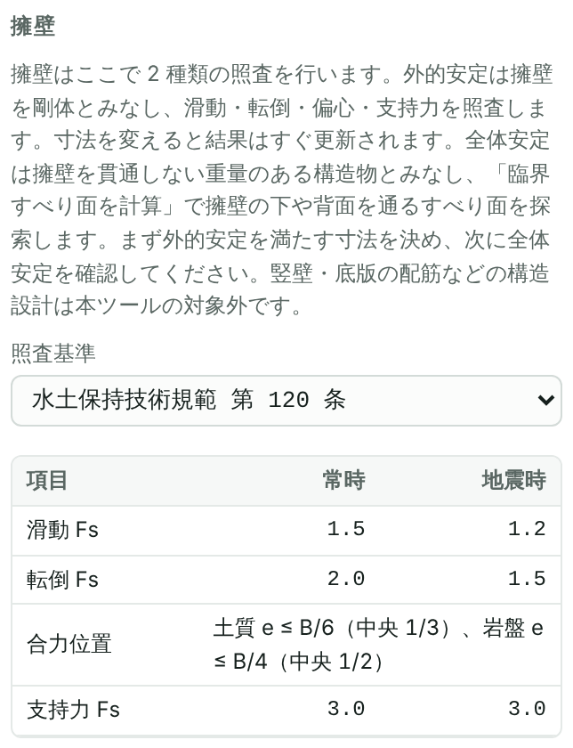
「擁壁」タブを開きます。照査基準の既定は水土保持技術規範第 120 条です。建築物基礎構造設計規範または公路橋梁設計規範も選べ、それぞれの所要値は下表のとおりです。
| 基準 | 滑動 | 転倒 | 合力位置 | 支持力 |
|---|---|---|---|---|
| 水土保持技術規範 第 120 条 | 1.5 / 1.2 | 2.0 / 1.5 | 土 e ≤ B/6、岩 e ≤ B/4 | 3.0 / 3.0 |
| 建築物基礎構造設計規範 7.4 節 | 1.5 / 1.2 | 2.0 / 1.5 | 底面内 | 3.0 / 2.0 |
| 公路橋梁設計規範 6.2.8 節 | 1.5 / 1.2 | 2.0 / 1.5 | 底面内 | 3.0 / 2.0 |
常時 / 地震時。いずれも台湾の基準です。使用前に最新版を確認してください。
＋ 重力式を押して擁壁を追加し、次節のとおり寸法を入力します。3 つのボタンはそれぞれ重力式、片持ばり式、控え壁式の擁壁を追加し、形式はあとからカードで変更することもできます。
7.3 寸法の入力
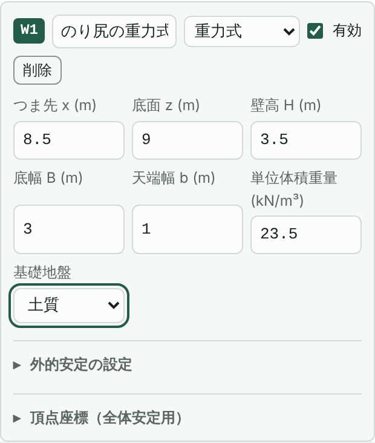
| 項目 | 意味 | この例 |
|---|---|---|
| つま先 x | 底面の前面（外側）端の x | 8.5 |
| 底面 z | 底面の標高 | 9 |
| 高さ H | 底面から天端まで | 3.5 |
| 底面幅 B | 底面の幅 | 3.0 |
| 天端幅 b | 天端の幅（重力式） | 1.0 |
| 単位体積重量 | 擁壁の単位体積重量 | 23.5 kN/m³ |
| 基礎地盤 | 土または岩。合力位置の許容範囲が決まる | 土 |
重力式擁壁は背面が鉛直で前面に勾配があります。片持ばり式と控え壁式には底版厚、つま先長、竪壁の天端厚と基部厚もあり、控え壁式ではさらに控え壁の間隔と厚さを入力します。擁壁の向きは斜面に合わせて自動で決まり、つま先は常に斜面の外側です。
7.4 照査結果の見方
寸法を入力すると、下の「外的安定」にケースごとの結果が表示されます。列は「照査」タブで有効なケースで、地下水位、震度、荷重は各ケースの設定に従います。
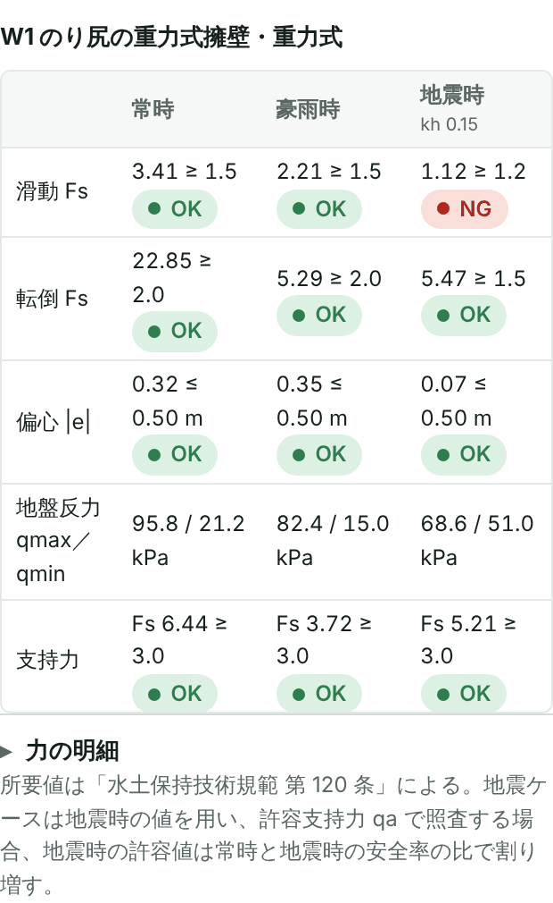
常時と豪雨時は満たしますが、地震時の滑動安全率 1.12 は不足です。対策には底面幅を広げる、突起を設ける、前面の受働土圧を考慮する、などがあります。ここでは前面の道路の下に 1 m の根入れがあり、路盤は将来も残るため、擁壁前面の受働土圧を考慮します。
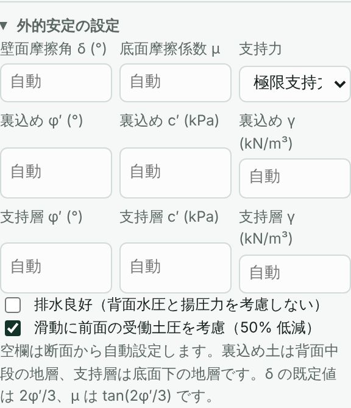
- カードの外的安定の設定を展開します。
- 滑動に前面の受働土圧を考慮（50% 低減）をチェックします。
ここにはほかに次の設定があります。
- 壁面摩擦角 δ：重力式擁壁用。空欄なら 2φ′/3。
- 底面摩擦係数 μ：空欄なら tan(2φ′/3)、φ′ は支持層の値。試験値があれば入力します。
- 支持力：既定は Meyerhof 式による極限支持力。許容支持力 qa を入力することもできます。
- 裏込め土と支持層の φ′、c′、γ：空欄なら擁壁背面の中段と底面下の地層から取ります。裏込めに良質な盛土材を使う場合はここで指定します。
- 排水良好：チェックすると背面水圧と底面の揚圧力を考慮しません。
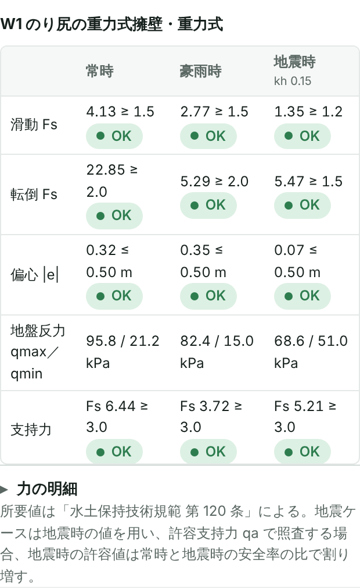
「力の明細」を展開すると、裏込め土と支持層の定数、土圧係数、土圧合力とその作用高、水圧と揚圧力、重量、モーメント、極限支持力が表示され、手計算で確認できます。「擁壁」タブを開いている間は、図に擁壁の自重 W、土圧 Pa、底面の中央 1/3、合力の位置が表示されます。
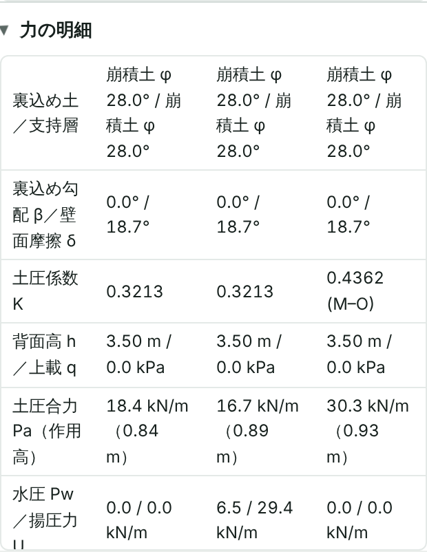
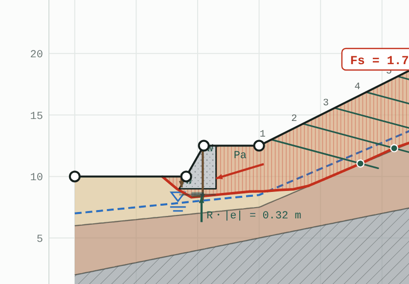
7.5 全体安定の確認
外的安定を満たしたら、臨界すべり面を計算を押し、続いて「照査」タブで全ケースを計算を押します。擁壁は構造物として扱われ、すべり面は擁壁の下か背後しか通れません。
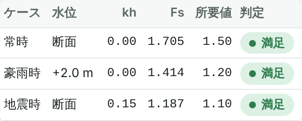
擁壁の押え効果で、3 ケースとも Fs がさらに少し上がります。この時点のモデルは tutorial-3-wall.json です。
第 8 章報告書の作成と保存
8.1 報告書の情報
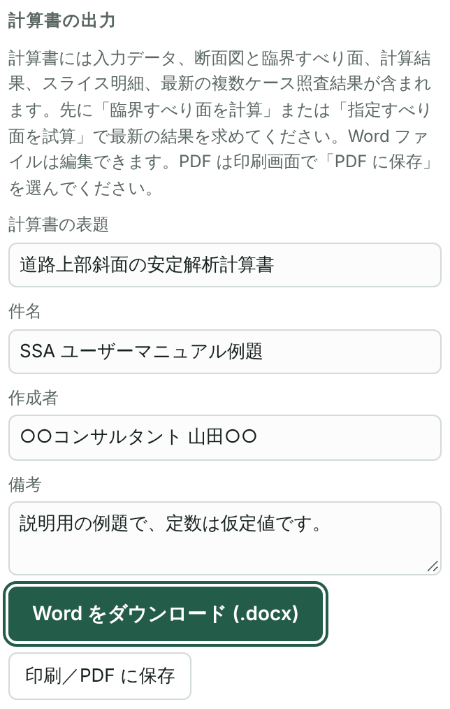
- メイン画面と「照査」タブの結果が最新であることを確認します。モデルを変更すると、結果欄に古い結果である旨が表示されます。
- 「照査」タブ下部の計算書の出力で、報告書の表題、件名、解析者、備考を入力します。
- Word をダウンロード (.docx)を押すか、印刷／PDF に保存を押して印刷ダイアログで「PDF に保存」を選びます。
Word ファイルはそのまま編集でき、社内の書式を適用したり説明を加えたりできます。
8.2 報告書の内容
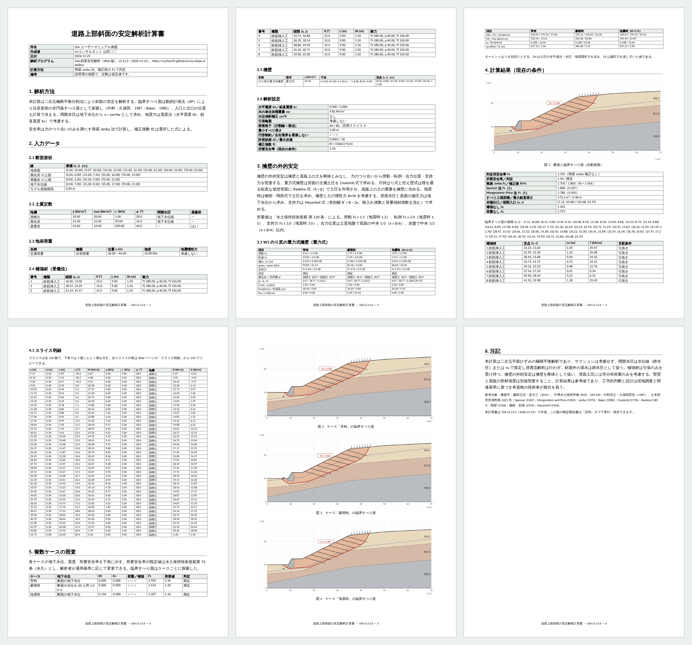
| 節 | 内容 |
|---|---|
| 表紙の情報 | 件名、解析者、日付、プログラムの版と URL、計算方法。 |
| 1. 計算方法 | 使用した方法と、間隙水圧・地震力の扱い。 |
| 2. 入力データ | 断面形状、土質定数、荷重、補強材、擁壁、解析の設定。 |
| 3. 擁壁の外的安定 | 擁壁があるときのみ。方法、所要値、ケースごとの照査表、力の明細。 |
| 4. 計算結果 | 臨界すべり面を含む断面図、安全率、補強材の力、スライスの明細。 |
| 5. 複数ケースの照査 | ケースを計算したときのみ。一覧表と各ケースのすべり面。 |
| 6. 備考 | 適用範囲、参考文献、プログラムの版。 |
節番号は内容に応じて調整されます。例題の報告書全体は Word または PDF で確認できます。
8.3 保存と再開
ページを閉じるとモデルは残らないので、忘れずに保存してください。
- 「設定」タブ下部のモデルファイルでモデルを保存 (JSON)を押します。ファイルには地形、地層、水位、荷重、補強材、擁壁、ケース、すべての設定が含まれます。
- 次回はモデルを読み込む…を押してファイルを選べば、続きから作業できます。
「JSON をテキストでコピー・貼り付け」を展開すれば、モデルをメールやメモに貼り付けることもできます。
第 2 部
応用：特定の場面で使う機能
各章冒頭の「使う場面」で、どのようなときに使うかを説明します。特に断りがなければ、各章は第 4 章のモデル tutorial-1-slope.json（補強なし）から始めます。「設定」タブの「モデルを読み込む…」で読み込んでください。
第 9 章すべり面の位置が分かっているとき：制御点
使う場面
崩壊した斜面や変動中の斜面では、孔内傾斜計や TDR のせん断深度、ボーリングコアのせん断帯、のり肩の滑落崖、のり尻の隆起など、すべり面の位置を示す現地データがあることが多いです。このとき自動探索の「最も危険な」すべり面が、実際に動いているすべり面とは限りません。探索がこれらの既知の位置を通るようにし、そのすべり面で補強設計や逆算を行います。
例題で、斜面中腹 x = 28 m の孔内傾斜計 BH-1 が地表から 8 m の深さで明瞭なせん断変位を示したとします。
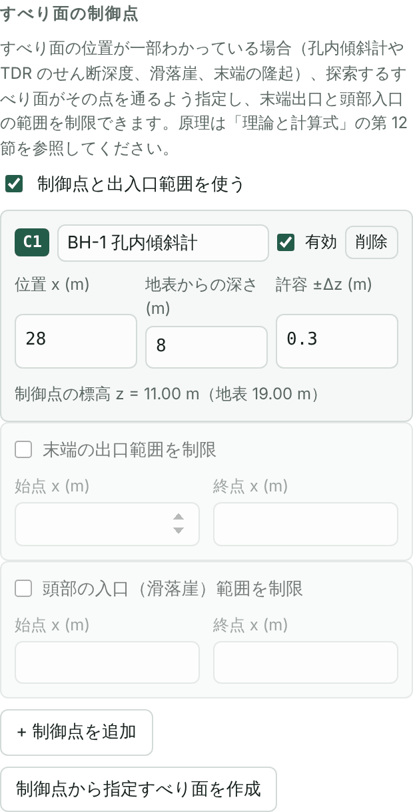
- 「断面」タブのすべり面の制御点で、制御点と出入口範囲を使うをチェックします。
- + 制御点を追加を押し、孔番、位置 x = 28、地表からの深さ = 8、許容 ±Δz = 0.3 m を入力します。プログラムが制御標高 z = 11 m に換算して表示します。
- 臨界すべり面を計算を押します。x = 28 m で z = 11 ± 0.3 m を通るすべり面だけが採用されます。
すべり面の両端を制限する設定もあります。
- 末端の出口範囲を制限：のり尻の隆起、湧水、擁壁の変状がある位置。
- 頭部の入口（滑落崖）範囲を制限：のり肩に引張亀裂や滑落崖がある位置。
主測線上に複数の孔内傾斜計がある場合など、制御点は複数追加できます。制御点から指定すべり面を作成は、制御点と出入口を結んだすべり面を指定すべり面に入れ、第 10 章と第 11 章の出発点にします。
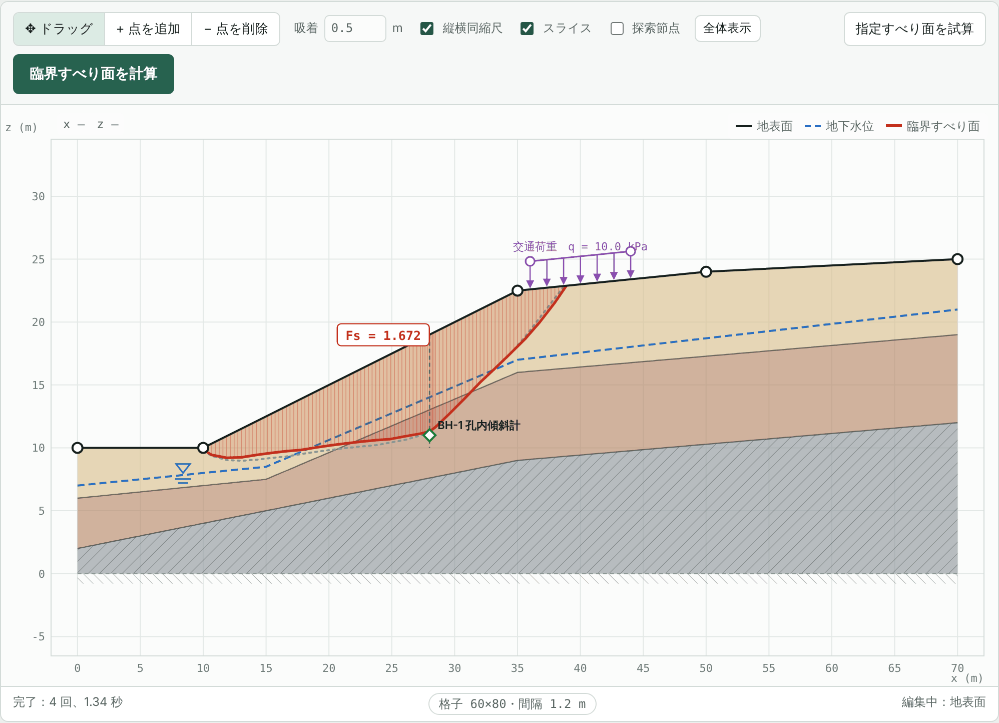
ここでは制御点を通るすべり面の Fs = 1.672 で、自由探索の 1.318 よりかなり高くなります。斜面が実際に深さ 8 m のすべり面で動いているなら、現地の強度は仮定より低いか、水位が高いはずです。このすべり面で逆算し（第 11 章）、自由探索の結果ではなく逆算した定数で補強を設計します。
第 10 章指定すべり面と円弧
使う場面
- 旧報告書やほかのプログラムの計算を、同じすべり面で計算し直して照合する。
- 測量で得た実際の崩壊面の安全率を求める、またはそれから逆算する。
- 探索せずに特定のすべり面の Fs だけを知りたい。
指定すべり面は「断面」タブの線の一覧にある指定すべり面（試算用）です。作り方は 5 通りあります。
- 座標欄に点を貼り付けて「座標を適用」を押す。
- 「点を追加」モードで図上の点を順にクリックする。
- 計算後に現在の臨界すべり面をコピーを押して編集する。
- 中心と半径を入力して円弧を作る（本章で説明）。
- 制御点から作る（第 9 章）。
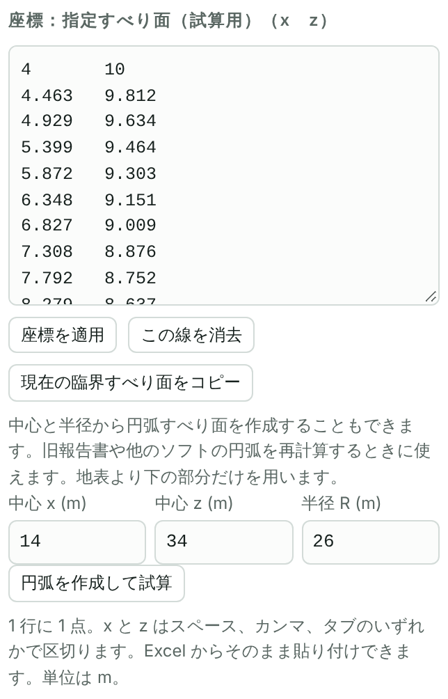
旧報告書が中心 (14, 34)、半径 26 m の円弧を使っていたとします。
- 「断面」タブで指定すべり面（試算用）をクリックします。
- 座標欄の下で中心 x = 14、中心 z = 34、半径 R = 26 を入力します。
- 円弧を作成して試算を押します。円弧のうち地表より下の部分を座標欄の点に変換し、すぐに試算します。
ほかの条件を変えたあとは、ツールバーの指定すべり面を試算でこの円弧を再計算できます。報告書には中心と半径が記録されます。
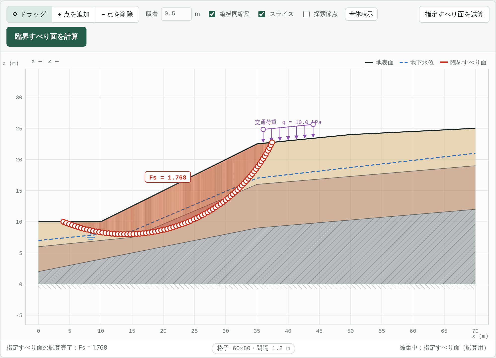
第 11 章土質定数の逆算
使う場面
斜面が崩壊した、または変動している場合、崩壊時の Fs をおよそ 1.0 とみなして強度定数を逆算できます。逆算した定数は現地の実際の状態を反映しており、試験値よりも対策工の設計に適していることがよくあります。
例題の斜面が豪雨後に元の臨界すべり面で崩壊し、そのときの水位が断面の地下水位より約 2 m 高かったとします。
- 臨界すべり面を計算を押し、「断面」タブで指定すべり面（試算用）をクリックして現在の臨界すべり面をコピーを押します。実務では、測量や制御点から得た実際のすべり面をここに使います。
- 地下水位を崩壊時の水位 (0, 9) (15, 10.5) (35, 19) (70, 23) に変更します。
- 指定すべり面を試算を押します。ここでは Fs = 1.069 です。
- 「設定」タブの逆算解析で、地層を自動（すべり面の通過長が最長の地層）、逆算するパラメータを内部摩擦角 φ′（c′ 固定）、目標 Fs を 1 にします。
- 逆算するを押します。
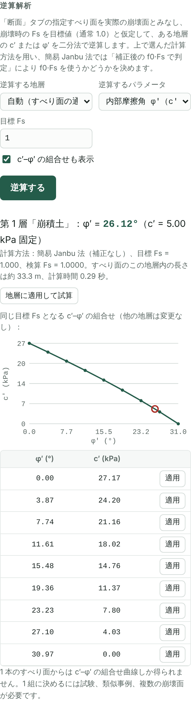
崩積土の φ′ が 26.12°（c′ = 5 kPa 固定）のとき、Fs はちょうど 1.000 になります。地層に適用して試算で、この値を「土質」タブに書き戻します。
「c′–φ′ の組合せも表示」をチェックすると、Fs = 1 となる c′ と φ′ の組合せがすべて描かれます。1 つのすべり面からは 1 本の曲線しか決まらず、c′ と φ′ の両方は決められないので、次のいずれかにします。
- 試験、近隣の事例、経験からどちらかを固定する。例えば崩積土の c′ をごく小さくする。
- 2 つ以上の崩壊面（時期や断面の違うもの）の曲線を交差させる。
第 12 章地層別の水頭線と間隙水圧比 ru
使う場面
- 地層別の水頭線：地層によって水頭が違うとき。例えば崩積土には通常の地下水があり、その下の風化岩や礫層に被圧帯水層がある場合です。間隙水圧計で測った水頭は地下水位より高く、のり尻で自噴することもあります。
- 間隙水圧比 ru：地下水位のデータがないとき、または基準が盛土や残土処分場の間隙水圧を ru で表すとき。
- なし：乾燥している、または排水が良好と分かっている地層。
12.1 地層別の水頭線
例題のボーリング BH-2 で、風化岩の被圧水頭が地表近くまであり、のり尻では地表より高かったとします。
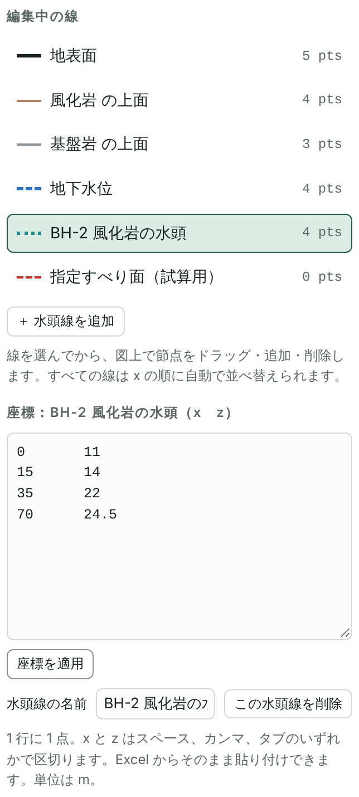
- 「断面」タブで＋ 水頭線を追加を押します。新しい線は地下水位のコピーとして作られ、編集中の線になります。
- 座標欄に (0, 11) (15, 14) (35, 22) (70, 24.5) を貼り付けて座標を適用を押します。
- 水頭線の名前に「BH-2 風化岩の水頭」と入力します。
- 「土質」タブで風化岩の間隙水圧を「BH-2 風化岩の水頭」にします。
- 臨界すべり面を計算を押します。
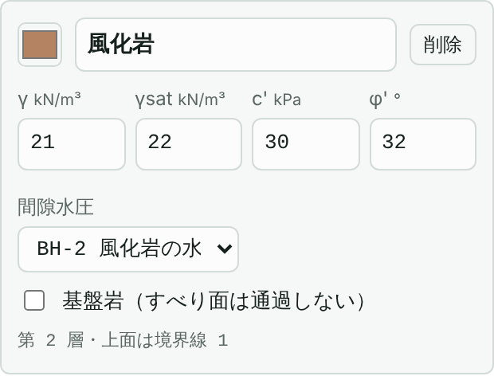
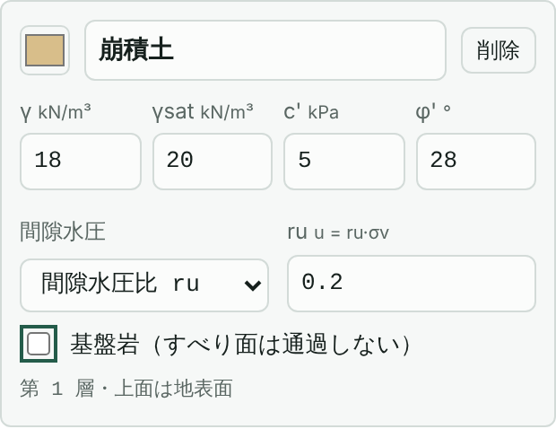
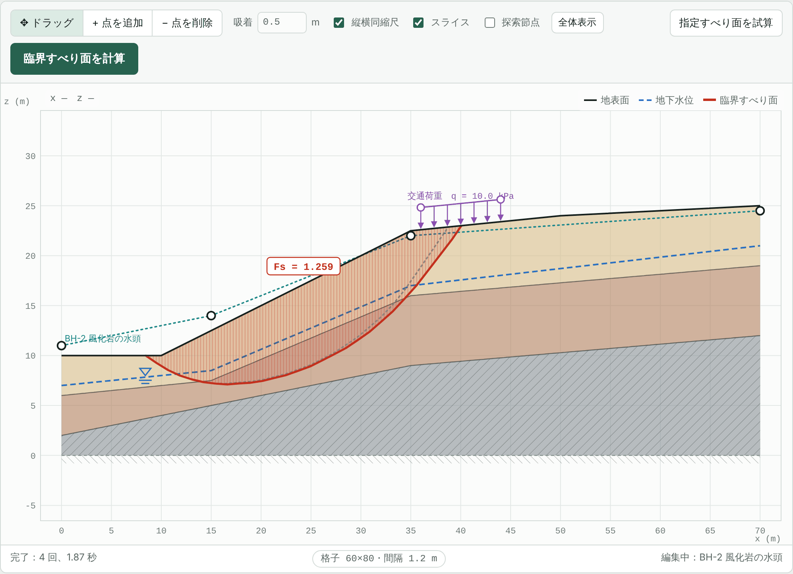
風化岩の間隙水圧が高くなると、臨界すべり面は風化岩に切り込み、最大深さは 5.9 m から 8.6 m になります。報告書の土質定数表には、各地層がどの間隙水圧を使ったかが記載されます。
12.2 間隙水圧比 ru
「間隙水圧比 ru」を選んで値を入力します。その地層の間隙水圧は u = ru·σv となり、σv はすべり面より上の土柱の全応力です。ru は 0.1〜0.5 が一般的で、基準や経験から決めます。
第 13 章斜面外の湛水と引張亀裂
使う場面
- 斜面外の湛水：河川、貯水池、調整池に面した斜面や、排水不良でのり尻に水がたまる場所。外側の水の重さと水圧は安定に有利に働きますが、水位急低下は不利になることがあります。
- 引張亀裂：のり肩にすでに引張亀裂がある、または c′ の大きい粘性土でのり肩に亀裂が生じるおそれがあるとき。亀裂深さの範囲の土はせん断抵抗を持たず、亀裂に水がたまると水平方向の押出し力が加わります。
13.1 斜面外の湛水
特別な設定は不要です。地下水位線を地表より上に描くと、地表より上の部分は湛水とみなされ、水色で表示されます。湛水の重さはスライスの上面に作用し、のり面の水圧の水平成分は滑動に抵抗します。結果には湛水の水平力が別に表示されます。
ここではのり尻前面の河川の水位を、のり尻の道路より 3 m 高い 13 m と仮定し、地下水位を (0, 13) (16, 13) (35, 17) (70, 21) に変更します。
13.2 引張亀裂
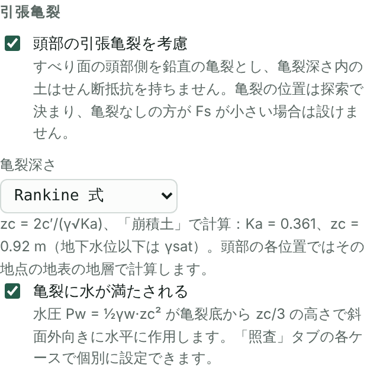
- 「設定」タブで頭部の引張亀裂を考慮をチェックします。
- 亀裂深さを「Rankine 式」にすると、のり肩の地層から zc = 2c′/(γ√Ka) を計算して下に表示します。「深さを指定」を選んで入力することもできます。
- 亀裂に水が満たされるをチェックすると、水圧 Pw = ½γwzc² が斜面の外向きに水平に作用します。
亀裂の位置は探索で決まり、亀裂なしの方が Fs が小さければ亀裂は考慮しません。「照査」タブの各ケースで、亀裂に水を満たすかどうかを個別に設定できます。例えば豪雨時だけ水を満たす、といった使い方です。
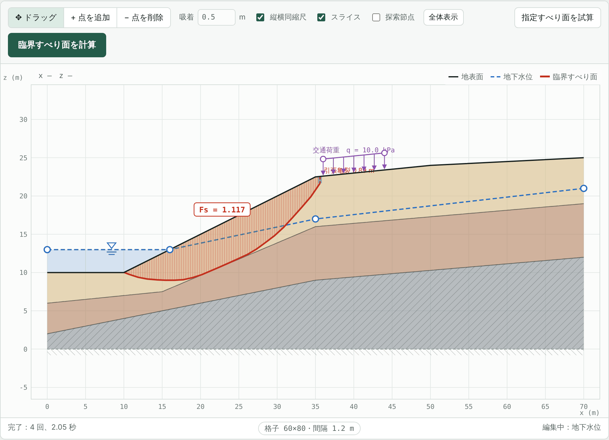
第 14 章抑止杭、マイクロパイル、ジオシンセティックス
使う場面
- 抑止杭：鉄筋挿入工やアンカーでは長さや定着力が足りない深い地すべりで、鋼管杭のせん断抵抗と曲げ抵抗が必要なとき。
- マイクロパイル：施工スペースの限られた道路斜面で、小口径杭の群で軸力とせん断力の両方を得るとき。
- ジオシンセティックス：ジオグリッドやジオテキスタイルを層状に敷設する補強盛土斜面や補強土壁。
これら 3 種類の補強材も鉄筋挿入工やアンカーと同じく「補強」タブで追加し、抵抗は常に抵抗側（受働）に計上します。
14.1 抑止杭
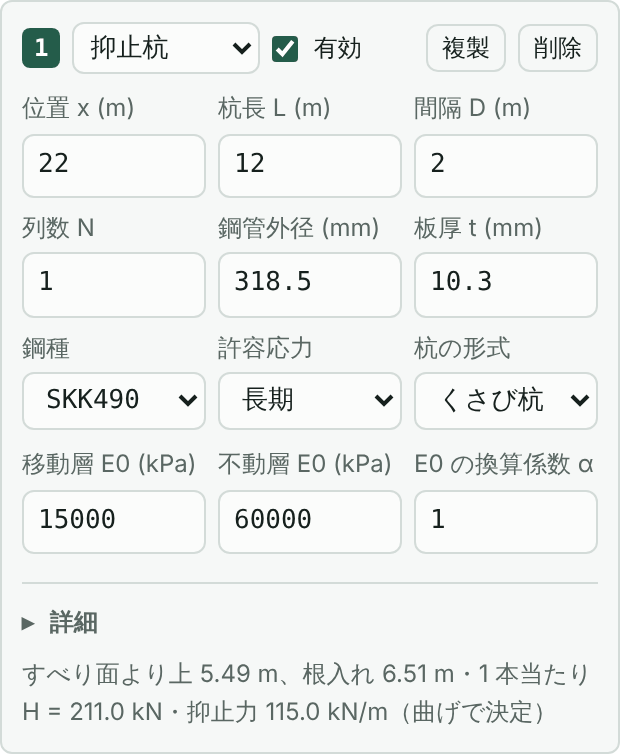
- 「補強」タブで＋ 抑止杭を押し、位置 x = 22、杭長 L = 12 m、間隔 D = 2 m、1 列（N = 1）とします。
- 設計に合わせて鋼管の径、肉厚、鋼種、許容応力（長期または短期）を選びます。既定は φ318.5×10.3 mm、SKK490、長期です。
- 杭の形式：すべり面より下に地盤反力が期待できる通常の場合はくさび杭、斜面下方側に地盤反力がない場合は抑え杭とします。
- 移動層と不動層の変形係数 E0 から水平方向地盤反力係数を求めます。ほかのパラメータは「詳細」を展開して設定します。
- 臨界すべり面を計算を押します。結果には杭ごとに、すべり面より上の長さ、根入れ長、負担できる水平荷重、支配条件が表示されます。
14.2 抑止杭の設計
「補強」タブの抑止杭の設計は地すべり防止技術指針に従います。補強なしの臨界すべり面で Fs を計画安全率にする必要抑止力 Pr を求め、杭 1 本当たりの設計荷重に換算し、曲げ応力、せん断応力、根入れ長、地盤の降伏を照査します。
- 先に臨界すべり面を計算を押します。
- 計画安全率 PFs に 1.5 を入力し、必要抑止力の計算と杭の照査を押します。
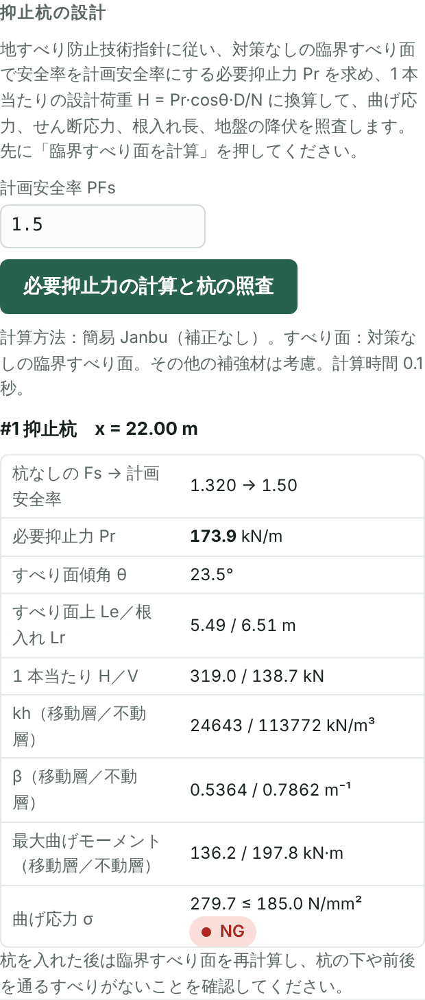
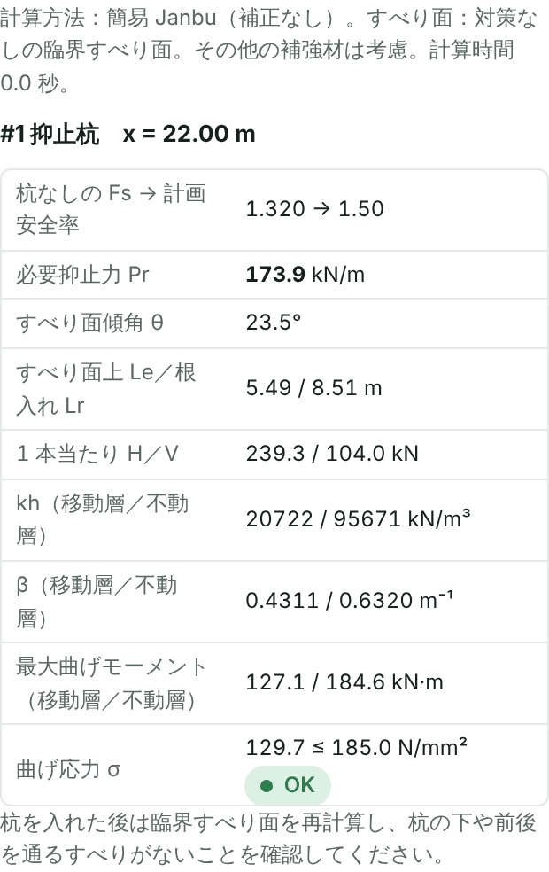
最初の設計では必要抑止力 Pr = 173.9 kN/m、1 本当たり H = 319 kN で、曲げ応力 279.7 N/mm² が許容値 185 N/mm² を超えます。φ406.4×12.7 mm の鋼管を間隔 1.5 m にすると曲げ応力は 129.7 N/mm² に下がりますが、根入れ長 6.51 m が必要な 7.01 m に足りません。杭長を 14 m にするとすべての照査を満足します。
14.3 マイクロパイルとジオシンセティックス
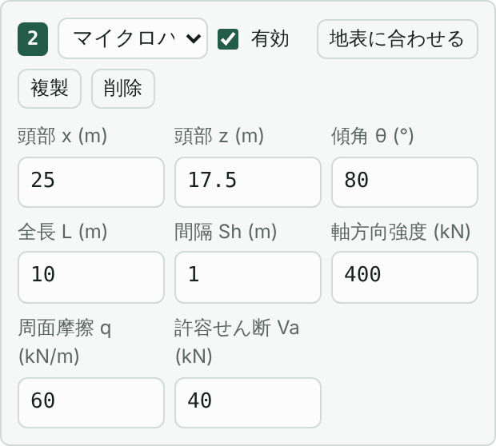
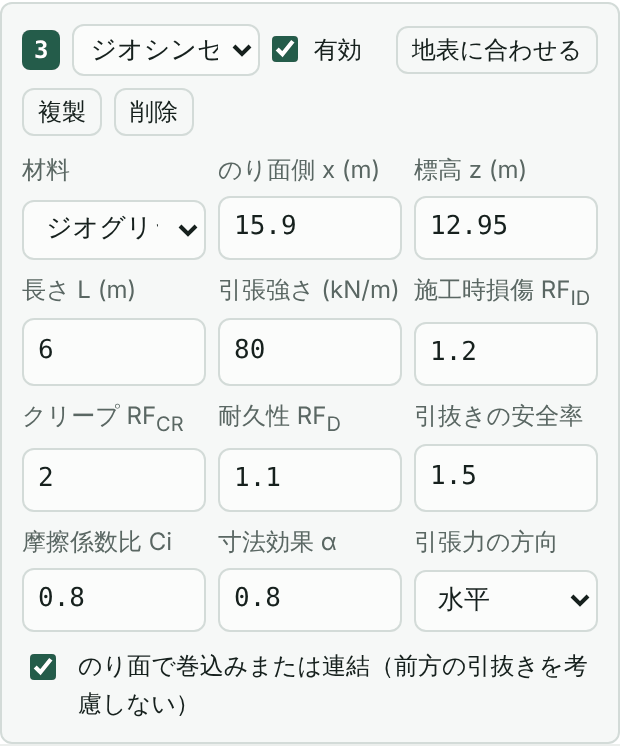
- マイクロパイル：軸力は周面摩擦 q とすべり面より先の長さの積と軸方向強度のうち小さい方で、杭軸方向に作用します。許容せん断力 Va は杭軸に直角に作用します。どちらも滑動に抵抗する向きとします。傾角 θ が 90° 未満なら斜面内側に傾きます。
- ジオシンセティックス：許容引張力 Ta = Tult/(RFID·RFCR·RFD) を、すべり面の両側の引抜き抵抗と比べて小さい方を採用します。力の向きは水平またはすべり面方向です。「のり面で巻込みまたは連結」をチェックすると、前方は引抜きで制限されません。複数層は「列で配置」または「コピー」で配置します。
第 15 章計算方法と探索の設定
使う場面
- 基準や審査で、力とモーメントの両方のつり合いを満たす厳密法が求められるとき。
- 断面が長い、地層が薄い、結果が不自然などで、探索格子の調整が必要なとき。
- ごく浅い表層すべりを除外したいとき、または浅い崩壊を検討したいとき。
15.1 計算方法
| 方法 | つり合い | 説明 |
|---|---|---|
| 簡易 Janbu 法 | 力 | 原 SSA プログラムの方法。高速で、補正前の値は安全側。補正係数 f0 を掛けられる。 |
| Spencer 法 | 力とモーメント | スライス間力の向きが一定（f(x) = 1）。 |
| Morgenstern–Price 法 | 力とモーメント | スライス間力の向きが半正弦関数に従う。 |
どの方法でも、DP はまず簡易 Janbu 法で臨界すべり面を求めます。厳密法を選んで厳密法で探索後にすべり面を局所最適化をチェックすると、すべり面の頂点と両端を動かして、選んだ方法の Fs が最小になるようにします。結果には 3 つの方法の値が並びます。
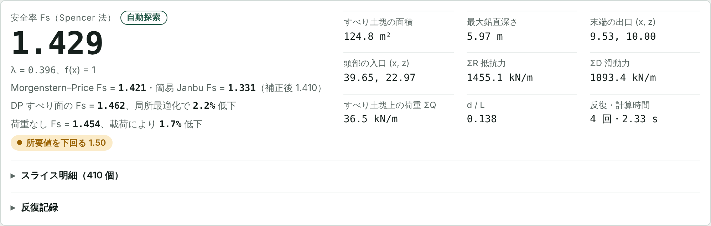
補正係数 f0
簡易 Janbu 法はスライス間のせん断力を無視するため、通常 Fs を小さく評価します。補正係数 f0 には 2 つの式があります。f0 = (50d/L)0.03（土木研究所資料、1987）と Janbu の補正曲線です。既定では原 SSA プログラムと同じく補正前の値を使い、補正後の f0·Fs で判定をチェックすると補正後の値を使います。厳密法には f0 は不要です。
15.2 探索格子
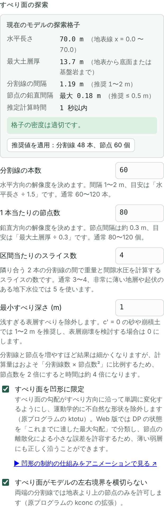
DP は断面を横切る鉛直分割線を何本も引き、各線上に節点を並べます。すべり面は最初の線から最後の線まで、各線上で 1 つずつ節点を選んで結んだ折れ線です。
| 設定 | 推奨値 |
|---|---|
| 分割線の本数 | 間隔 1〜2 m、およそ水平長 ÷ 1.5。通常 60〜120。 |
| 1 本当たりの節点数 | 節点間隔約 0.3 m、およそ最大層厚 ÷ 0.3。通常 80〜120。 |
| 区間当たりのスライス数 | 通常 3〜4。非常に薄い地層や不規則な地下水位では 5。 |
| 最小すべり深さ | c′ = 0 の砂や崩積土では 1〜2 m。浅い崩壊を検討するときは 0。 |
上の「現在のモデルの探索格子」は断面から分割線の間隔、節点間隔、計算時間を見積もり、推奨値を適用ボタンを表示します。ステータスバー中央の格子ボタンからもここに移動できます。計算量はおよそ 分割線数 × 節点数² に比例するので、節点数を 2 倍にすると時間は約 4 倍になります。
- すべり面を凹形に限定：運動学的に不合理な形状を除外します。チェックしたままにしてください。
- すべり面がモデルの左右境界を横切らない：両端の分割線では地表より上の節点だけを受け付け、すべり面がモデル境界から抜けないようにします。
- ツールバーの探索節点をチェックすると、図に節点の位置が表示されます。
15.3 収束と判定
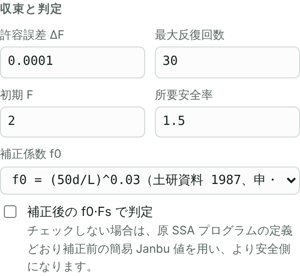
許容誤差 ΔF、最大反復回数、初期 F は通常変更不要です。所要安全率はメイン画面の判定基準で、複数ケースの照査には「照査」タブの所要値を使います。
第 16 章単位、保存、検証レポート、版
16.1 単位
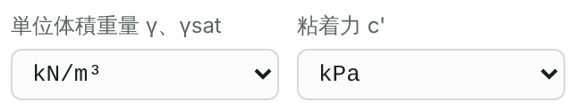
「土質」タブ上部で、単位体積重量の単位（kN/m³ または tf/m³）と、粘着力・応力の単位（kPa または tf/m²）を別々に選べます。入力済みの値は自動で換算され、結果と報告書も同じ単位になります。1 tf = 9.80665 kN です。
16.2 保存とデータ交換
- JSON モデルファイル：「設定」タブの「モデルを保存」と「モデルを読み込む…」。すべての入力と設定を含みます（8.3 節）。
- CSV：地形を CSV から取り込めます（1.2 節）。スライスの明細と複数ケースの一覧は CSV でコピーできます。
- 報告書：Word または PDF（第 8 章）。
- 観測井の時系列：水位と雨量は CSV で読み込み、JSON モデルと一緒に保存されます。Fs 時系列は CSV と SVG のグラフでダウンロードできます（第 17 章）。
- 元に戻す：Ctrl+Z または左上の「元に戻す」で 1 つ前に戻ります。
16.3 検証レポート
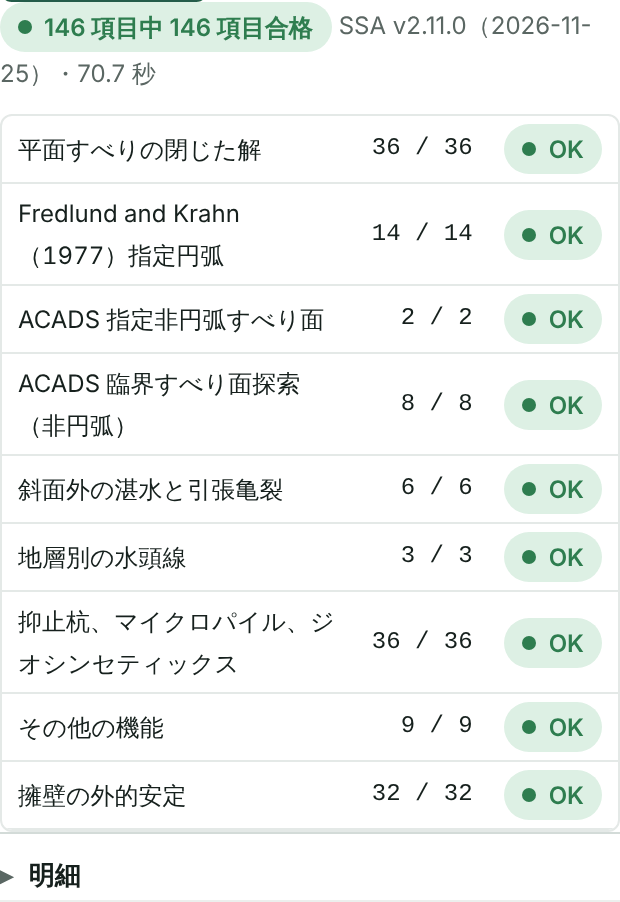
「説明」タブの検証を実行は、現在の計算コアでブラウザ内のすべての検証問題を計算し直します。解析解、Fredlund and Krahn、ACADS の標準問題、湛水と引張亀裂、水頭線、補強材、鋼管杭の計算例、擁壁の外的安定が含まれます。参考値、本ツールの結果、差、合否を一覧にし、所要時間は約 3 分です。結果は Word でダウンロードするか PDF に印刷でき、審査提出時のプログラム検証資料として使えます。v2.11.0 では 146 項目の照査がすべて合格しています。
16.4 版と言語
プログラムの版はページの表題の横、報告書、保存したファイルに表示されます。「説明」タブの版の履歴に各版の変更点があります。本書の表紙には対象とするプログラムの版を記載しており、機能が追加されると本書も改訂します。
右上のボタンで中文、English、日本語を切り替えられ、報告書は現在の言語で作成されます。本書には中国語版と英語版もあります。
第 17 章観測井の水位と Fs 時系列
どんなときに使うか
- 斜面に地下水位の観測井と雨量計があり、降雨ごとに安全率がどう変わるか、どの降雨で Fs が所要値を下回り、どれだけ続いたかを知りたいとき。
- 警戒避難の計画で、水位がどこまで上がると Fs が所要値や 1.0 まで下がるかを把握し、水位や雨量の基準値を決める根拠にしたいとき。
この章では第 4 章のモデルから始め、プログラムに組み込まれた仮想デモデータで操作します。完成したモデルは tutorial-4-wells.json（時系列データを含む）、時系列データは wells-demo.csv です。
17.1 各時刻の地下水位線
観測井で分かるのは数点の水位だけですが、計算には 1 本の地下水位線が必要です。SSA は「断面」タブの地下水位線を基準形状とし、各井戸でその時刻の観測水位を通るように水位線を動かします。
zw(x, t) = zw0(x) + Δh(x, t)、Δhi(t) = hi(t) − zw0(xi)
zw0 は断面の地下水位線、hi(t) は時刻 t における井戸 i の水位です。Δh は井戸間で直線補間し、最も外側の井戸より外はその井戸の値とし、上昇後に地表より高くなる部分は地表とします。水頭線（第 12 章）も同じ Δh で昇降します。
17.2 観測井の設定
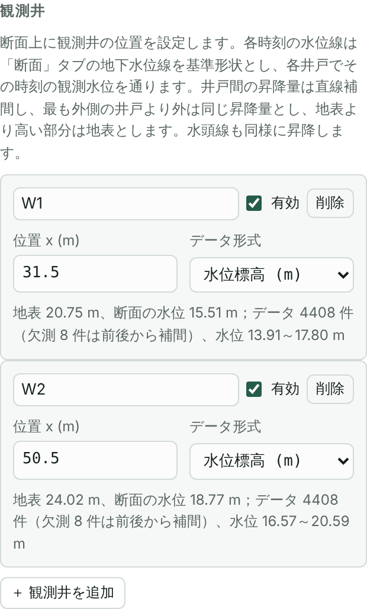
- 「断面」タブに地下水位線があることを確認します。
- 「時系列」タブで＋ 観測井を追加を押し、井戸名と位置 x を入力します。CSV を読み込むと、見出しが井戸名と同じ列は自動で対応づけられ、対応のない列は観測井が追加されます。
- データ形式が「水位標高」なら記録値は水位の標高、「地表からの深さ」なら地表から下向きに測った深さで、井戸位置の地表標高で換算します。
- カードの下に井戸位置の地表標高、断面の水位、データ件数、水位の範囲が表示されます。水位が地表より高いと注意が出ます。多くはデータ形式か位置の誤りです。
断面図には井戸の位置が縦線で表示されます。有効のチェックを外した井戸は計算に使いません。
17.3 水位と雨量の読み込み
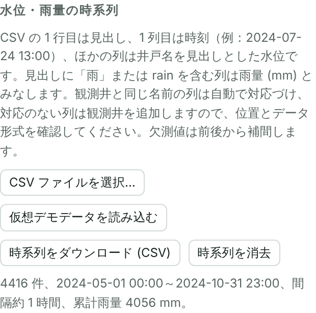
時系列データは CSV で読み込みます。1 行目は見出し、1 列目は時刻、ほかの列は井戸名を見出しとした水位です。見出しに「雨」または rain を含む列は雨量 (mm) とみなし、なくてもかまいません。
時刻,雨量(mm),W1,W2 2024-05-01 00:00,0,13.91,16.57 2024-05-01 01:00,0,13.92,16.57 …
- 時刻は 2024-07-24 13:00、2024/7/24 13:00、2024-07-24T13:00 のほか、時間単位の数値でもかまいません。
- 間隔は一定でなくてもかまいません。欠測の水位は前後から直線補間し、欠測の雨量は 0 とします。
- 読み込み後、件数、期間、間隔、累計雨量が表示されます。時系列データは JSON モデルファイルに一緒に保存されます。
仮想デモデータを読み込むを押すと、現在の断面に 2 本の井戸を設け、2024 年 5～10 月の時間データを作成します。午後の雷雨、2 回の梅雨前線、2 回の台風を含み、水位は線形貯留モデルで雨量から求めています。練習用の仮想データで、実測値ではありません。
17.4 Fs 時系列の計算
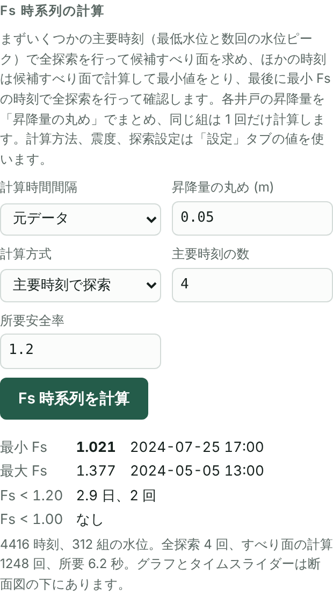
すべての時刻で全探索を行うと時間がかかるため、SSA は 3 段階で計算します。
- いくつかの主要時刻で全探索を行い、候補すべり面を求めます。主要時刻は水位が最も低い時刻と、互いに 72 時間以上離れた数回の水位ピークです。
- ほかの時刻はすべての候補すべり面で Fs を計算し、最小値をとります。
- Fs が最小の時刻でもう一度全探索を行います。より危険なすべり面が見つかれば候補に加えて計算し直し、最小 Fs の時刻が探索済みになるまで繰り返します。
また、各井戸の昇降量を昇降量の丸め（既定値 0.05 m）でまとめ、同じ組の時刻は 1 回だけ計算します。デモデータの 4416 時刻は 312 組になり、約 5 秒で終わります。
| 設定 | 内容 |
|---|---|
| 計算時間間隔 | 元データのまま、または 1、3、6、12、24 時間にまとめます。まとめた区間では最高水位と累計雨量を使い、区間の終わりの時刻で表示します。 |
| 昇降量の丸め | 組分けの刻みです。小さくすると組が増え、水位線が観測値に近づきます。 |
| 計算方式 | 「主要時刻で探索」は上記の方法、「全組で全探索」はすべての組で全探索を行います。最も厳密ですが時間がかかり、確認に使えます。 |
| 主要時刻の数 | 全探索の回数で、既定値 4（最低水位 1 回と水位ピーク 3 回）です。降雨が多いときや、水位によってすべり面の位置が変わるときは増やします。 |
| 所要安全率 | 所要値を下回る時間の集計に使います。既定値 1.2（台湾の水土保持技術規範の豪雨時）です。 |
計算方法、震度、探索設定は「設定」タブの値を使います。デモデータで 2 つの計算方式を比べると、最小 Fs はどちらも同じ時刻の 1.021 で、各時刻の Fs の差は 0.5% 未満（主要時刻で探索のほうがわずかに大きい）、計算時間は 298 秒から約 6 秒に短縮されます。
17.5 結果の読み方
結果は断面図の下に、上から雨量、各井戸の水位、Fs の順に表示されます。水位グラフの点線は井戸位置の地表、Fs グラフの 2 本の破線は所要値と 1.0 です。左の「時系列」タブには要約が出ます。この例の最小 Fs = 1.021 は 1 回目の台風中の 2024-07-25 17:00 で、W1 は断面の水位より 2.30 m 高くなっています。Fs が 1.2 を下回るのは 2 回の台風で合計 2.9 日、1.0 を下回る時間はありません。
- グラフ下のタイムスライダーをドラッグするか、◀ ▶ を押すか、グラフをクリックすると時刻を移動できます。断面図にはその時刻の地下水位線、各井戸の水位、支配すべり面が表示され、左上に時刻と Fs が出ます。最小 Fs へで最も危険な時刻に戻ります。
- 「候補すべり面」には各候補を探索した時刻と、それが支配する時刻数が表示され、低水位時と高水位時ですべり面が異なるかが分かります。
- 結果をダウンロード (CSV) には各時刻の雨量、各井戸の水位と昇降量、Fs、支配すべり面の番号が入ります。グラフをダウンロード (SVG) は報告書にそのまま使えます。
付録よくある質問と参考表
A. よくある質問
- 計算を押してもすべり面が見つからない。
- まずステータスバーのメッセージを確認してください。よくある原因は、地表線の点が 2 点未満、モデル底面が一部で地表より高い、最小すべり深さが大きすぎる、制御点や出入口範囲が互いに矛盾している、などです。制御点をオフにし、最小すべり深さを 0 にして試してください。
- 臨界すべり面がモデルの端など不自然な位置に出る。
- 「すべり面がモデルの左右境界を横切らない」がチェックされているか確認し、断面をのり肩とのり尻の先まで十分に延ばしてください（目安は斜面高さ以上）。
- ほかのプログラムと Fs が大きく違う。
- まず同じすべり面で比べ（第 10 章）、次に計算方法、間隙水圧、地下水位の上下での単位体積重量の使い分け、f0 補正、荷重の地震慣性力の有無を確認してください。
- 補強を加えても Fs が上がらない。
- 結果の補強材の表を見てください。「臨界すべり面と交わらない」とあれば、すべり面が補強材の外に移っています。補強材を長くするか、配置範囲を広げてください。
- 「擁壁」タブに、全体安定のみに考慮されると表示される。
- 頂点座標で形状を定めた擁壁は外的安定を照査できません。カードで寸法を入力するとパラメータ断面に戻ります。
- ケースで Δh や kh の入力を求められる。
- 豪雨時の水位上昇量と震度は案件ごとに入力が必要で、プログラムには既定値がありません（第 6 章）。
- ページを閉じたらモデルが消えた。
- SSA はサーバーにデータを保存しません。「モデルを保存 (JSON)」で保存してください（8.3 節）。
B. 斜面の最小安全率（既定値）
| 基準（台湾） | 常時 | 豪雨時／高水位 | 地震時 |
|---|---|---|---|
| 水土保持技術規範第 73 条、永久 | 1.5 | 1.2 | 1.1 |
| 水土保持技術規範第 73 条、仮設 | 1.2 | 1.1 | 1.0 |
| 公路邊坡工程設計規範 表 4.6-1、長期 | 1.5 | 1.2 | 1.1 |
| 公路邊坡工程設計規範 表 4.6-1、仮設 | 1.2 | 1.1 | 1.0 |
擁壁の外的安定の所要値は 7.2 節を参照してください。基準は改訂されることがあるので、使用前に最新版を確認してください。
C. 例題ファイル
| ファイル | 内容 | 使用する章 |
|---|---|---|
| tutorial-profile.csv | 例題の地表、地層境界、地下水位 | 第 1 章 |
| tutorial-1-slope.json | 断面、土質定数、交通荷重。補強なし | 第 4 章、各応用章の開始時 |
| tutorial-2-nails.json | 長さ 9 m の鉄筋挿入工 8 本と 3 ケースを追加 | 第 5、6 章 |
| tutorial-3-wall.json | のり尻の重力式擁壁を追加 | 第 7、8 章 |
| tutorial-4-wells.json | 第 4 章のモデルに観測井 2 本と仮想デモの時系列を追加 | 第 17 章 |
| wells-demo.csv | 仮想デモの時間雨量と井戸の水位 | 第 17 章 |
| tutorial-report.docx、.pdf | 例題の計算書 | 第 8 章 |
D. 用語と記号
| 記号 | 意味 |
|---|---|
| Fs | 安全率。抵抗力と滑動力の比 |
| γ, γsat, γw | 単位体積重量、飽和単位体積重量、水の単位体積重量 |
| c′, φ′ | 有効粘着力、有効内部摩擦角 |
| kh, kv | 水平震度、鉛直震度（震度法） |
| ru | 間隙水圧比 |
| f0 | 簡易 Janbu 法の補正係数 |
| Δh | 豪雨時の水位上昇量 |
| e, B | 擁壁の合力の偏心量、底面幅 |
| Pr, PFs | 必要抑止力、計画安全率 |
理論、計算式、参考文献の詳細は SSA ページ下部の「理論と計算式」にあります。
E. 連絡先とご意見
ご質問、不具合の報告、機能のご提案は cychen59@gmail.com（陳振宇）までメールでお寄せください。
本ツールは二次元の極限平衡解析を支援するもので、計算結果は参考値です。工学的判断と設計は、現地調査と関連基準に基づき、有資格の技術者が責任を負います。